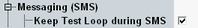

Common Settings
This section describes the upper part of SMS settings.

Keep test loop during SMS parameter
Specifies whether the test loop is kept closed for an established connection with test loop, when an SMS message is sent to the UE.
If disabled, the loop is opened before the message is sent and closed again afterwards. If the UE supports keeping the loop closed, you can speed up the procedure by enabling this parameter.
Remote command: